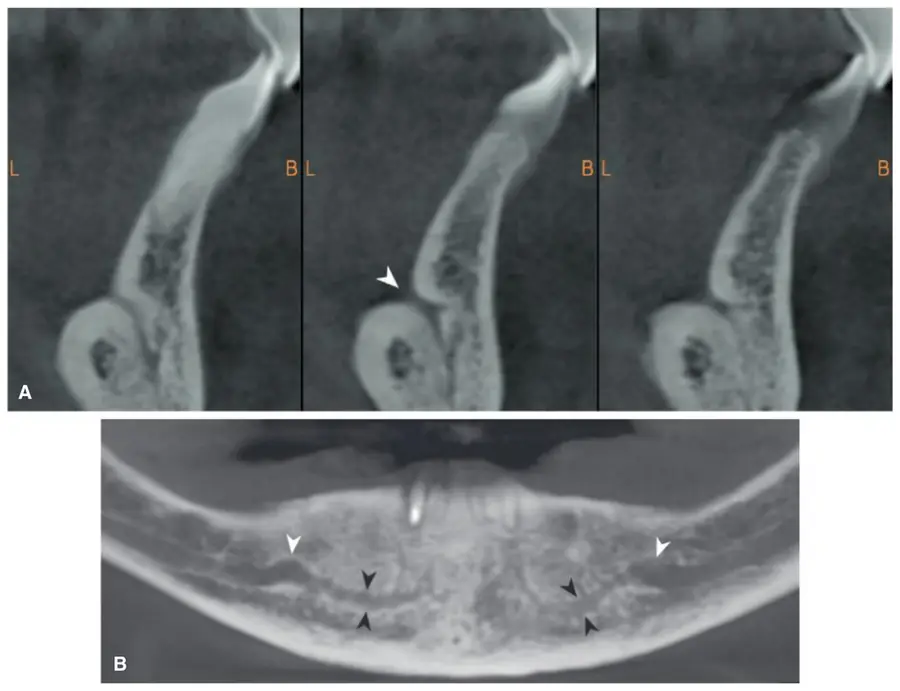
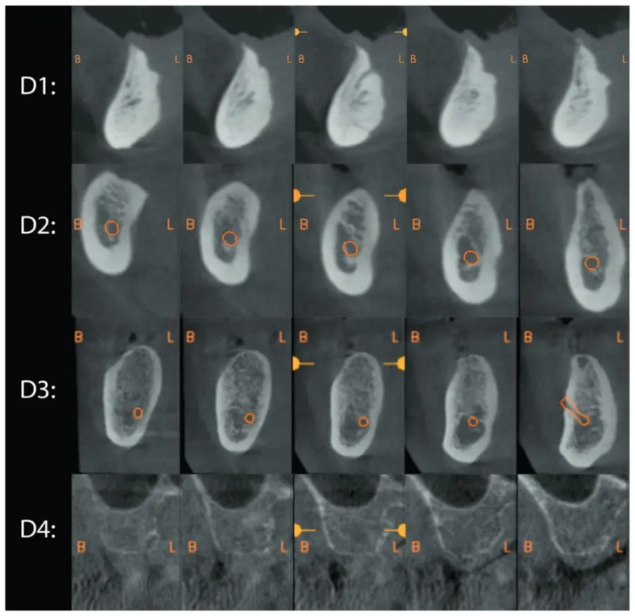

نسخه استخراجشده؛ ترجمه یا تأیید علمی انجام نشده است. وضعیت: captured
مزیت اصلی CBCT: «ارزیابی دقیق کمیت استخوان موجود در هر سه بُعد». و سه فاصلهی ایمنی پذیرفتهشده که باید حفظ کنی:

و یک تحول رویکردی که باید فهمید: پیش از CBCT، جایگذاری «عمدتاً یک رویکرد جراحیمحور بود، با مقدار استخوان موجود که موقعیت نهایی ایمپلنت را دیکته میکرد». ولی امروز «روندها به سمت رویکرد پروتزمحور چرخیدهاند»: نخست موقعیت آرمانی ایمپلنت «بر پایهی نیازهای عملکردی و زیبایی بیمار» تعیین میشود، و سپس با نرمافزار و کتابخانههای ایمپلنت مجازی جراحی شبیهسازی میگردد.
و سود ارتباطیاش: «نیاز به گرافت استخوان و آلوئولوپلاستی افزوده شناسایی و گزینههای درمانی ارائه میشود. این شفافیت و ارتباط بیشتر میان تیم و بیمار، به نتیجهی پیشبینیپذیرتر و انتظارات واقعبینانه از راه تصمیمگیری آگاهانه میانجامد.»
مرز عمودی مطلق: کف حفرهی بینی. ولی «بُعد عمودی استخوان موجود اغلب با آتروفی ریج باقیمانده محدود میشود، که میتواند به تقعر باکال برجسته بینجامد». و CBCT «تصمیم برای گرافت استخوان باکال افزوده یا سازشهای ترمیمی برای ایمپلنت کوتاهتر و پروکلاینتر را هدایت میکند».
و در ناحیهی انسیزور مرکزی، کانال نازوپالاتین باید ارزیابی شود — با یک هشدار مهم: «تفاوتهای مورفولوژیک بزرگی در ابعاد و پیکربندی این کانال هست؛ حتی در یک بیمار، قطر کانال میتواند در طولش بهشدت تغییر کند.» و CBCT «توپوگرافی کانال را دقیق نشان میدهد؛ بهویژه وقتی محدودیت فضایی هست، مانند لترال با موقعیت مزیالی».
مرز عمودی معمول: کف سینوس ماگزیلاری. و «پنوماتیزاسیون زائدهی آلوئولار یک فرایند فیزیولوژیک طبیعی است که اغلب با از دست دادن دندان شتاب میگیرد». و چرا CBCT لازم است؟ «هرچند کف سینوس روی تصاویر دوبعدی بهآسانی شناسایی میشود، الگوی پنوماتیزاسیون در بُعد عرضی میتواند متغیر باشد، و موقعیت دقیق کف سینوس تنها با تصویربرداری سهبعدی کاملاً درک میشود.»
و ساختارهای کلیدی مندیبل: کانال مندیبولار و کانال انسیزیو مندیبولار — «ادامهی قدامی آلوئولار تحتانی». و یک ویژگی مورفولوژیک که «در پریاپیکال دیده نمیشود»: تقعر لینگوال برجسته (فوسای سابمندیبولار)، که میتواند جایگذاری ایمپلنت در ناحیهی مولر را محدود کند.
کیفیت استخوان موضعی عامل مهمی در موفقیت ایمپلنت است — چون استخوان بیدندان باید «ثبات اولیهی ایمپلنت و محیطی مساعد برای اُسئواینتگریشن» بدهد.

ولی یک اعتراف صادقانه: «ارزیابی رادیولوژیک کیفیت استخوان در حال حاضر عمدتاً یک ارزیابی ذهنی از معماری ترابکولار است. سامانههای ردهبندی متعددی پیشنهاد شده، ولی اندکی بهعنوان سنجههای عملی نتیجهی بالینی اعتبارسنجی شدهاند.»
و پرکاربردترین سامانه، ردهبندی میش است — چهار رده بر پایهی «ضخامت استخوان کورتیکال و چگالی و توزیع استخوان ترابکولار»:
| رده | ظاهر رادیوگرافیک | محل معمول | دامنهی چگالی MDCT (HU) |
|---|---|---|---|
| D1 | عمدتاً استخوان کورتیکال متراکم؛ فضاهای مغز بهسختی دیده میشوند | گاهی مندیبل قدامی؛ بهندرت مندیبل خلفی | بیش از ۱۲۵۰ |
| D2 | لایهی بیرونی ضخیم کورتیکال متخلخل؛ الگوی ترابکولار درشت | شایع در مندیبل قدامی و خلفی؛ گاهی ماگزیلای قدامی | ۸۵۰ تا ۱۲۵۰ |
| D3 | لایهی نازکتر کورتیکال متخلخل؛ الگوی ترابکولار ظریف | شایع در ماگزیلای قدامی و خلفی و مندیبل خلفی؛ گاهی مندیبل قدامی | ۳۵۰ تا ۸۵۰ |
| D4 | خط کورتیکال نازک محو تا نامحسوس؛ زائدهی آلوئولار عمدتاً ترابکولار ظریف | شایع در ماگزیلای خلفی؛ بهندرت ماگزیلای قدامی | ۱۵۰ تا ۳۵۰ |
و کجا بهتر ارزیابی میشود؟ «بهدلیل توانایی نمایش روشن ضخامت کورتکس و سازماندهی ترابکولار، این ارزیابیها روی تصاویر مقطعی CT بهتر از تصاویر داخلدهانی و پانورامیکاند.»
ولی محدودیت ذهنی همچنان باقی است: «تمایز میان کورتکس «ضخیم» یا «نازک» و ترابکولار «درشت» یا «ظریف» بر آستانههای ذهنی مشاهدهگر تکیه دارد، که میان دندانپزشکان متغیر است.»
و یک هشدار حیاتی دربارهی HU در CBCT — که با درس واحد هانسفیلد گره میخورد: «بهدلیل هندسهی پرتو پهن، پرتو پراکندهی افزایشیافته، و تفکیک کنتراستی پایینتر، اندازهگیریهای HU از مجموعهدادههای CBCT برای پیشبینی چگالی استخوان غیرقابل اعتمادند.»
و یک قاعدهی کلی جغرافیایی که به یاد ماندنی است: «بهطور کلی، چگالی استخوان فک در مندیبل قدامی بالاترین و در ماگزیلای خلفی پایینترین است.» — دقیقاً همان الگویی که ستون «محل معمول» جدول میش نشان میدهد.
و تعریف رسمی چگالی استخوان: «جرم مواد معدنی بر واحد حجم استخوان»؛ و در تشخیص استئوپروز و ارزیابی خطر شکستگی، معمولاً با جذبسنجی دوانرژی پرتو ایکس (DEXA) انجام میشود.
و یافتههای دیگری که تصویربرداری باید رد کند: «قطعات ریشهی باقیمانده، اجسام خارجی، و پاتولوژی باقیمانده» — و «یافتههای نیازمند درمان شامل شرایط التهابی که میتوانند به استئومیلیت و سکستراسیون استخوان بینجامند».
حین عمل: تصویربرداری به روشهای سریع درونمطبی، یعنی پریاپیکال و پانورامیک دیجیتال، محدود است تا موقعیت متهی پایلوت تأیید و خطا پیش از گامهای بعدی استئوتومی اصلاح شود. CBCT فوری تنها در حادثه لازم است: ایمپلنتی که به سینوس ماگزیلاری جابهجا شده یا از میان کانال آلوئولار تحتانی گذشته است.
پیگیری: در بیمار بدون علامت، تصویربرداری سالانه در چهار سال نخست، بهویژه در سال نخست بارگذاری عملکردی که از دست رفتن استخوان مارژینال و شکست محتملترین است. دو نشانگر قابل اعتماد موفقیت، ثبات بالینی و استخوان مجاور بدنهی ایمپلنت در رادیوگرافیاند؛ و تصاویر پیگیری باید همان هندسهی پروجکشن و پارامترهای اکسپوز خط پایه را داشته باشند.
سه الگوی شکست: پریایمپلنتیت مارژینال با از دست رفتن استخوان کرستال و مهاجرت پیشرونده به سمت آپیکال دیده میشود؛ پریایمپلنتیت آپیکال یا رتروگراد، که نادر است، از دست رفتن استخوان گرد بخش آپیکال است در حالی که بخش کرونال در استخوان مانده؛ و شکست اُسئواینتگریشن یک اتصال رادیولوسنت یکنواخت میان فیکسچر و استخوان اطراف نشان میدهد.